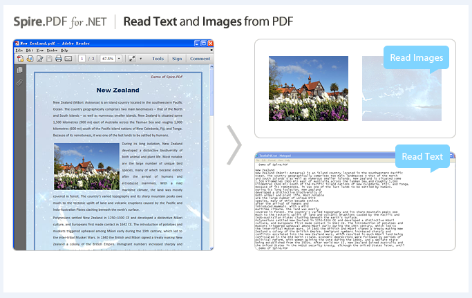

Sometimes, you may find it a very frustrating task to extract contents from PDF file. This sample shows you how to extract text from PDF file into TXT file and how to save all images embedded in the PFD file to local folder using a free .NET PDF component.
To extract text and image from a PDF document, your PDF file should meet some basic conditions. First of all, your PDF file is formatted to contain text or images. Next, the PDF file does not contain security restrictions because the security restrictions will disable text choosing.
Environment requirements
Method
(Code snippet is available in the package attached.)
Screenshots of extract text and image from PDF

As a professional PDF component, free Spire.PDF is applied to creating, writing, editing, handling and reading PDF files without any external dependencies within .NET application. Using this .NET PDF library, you can implement rich capabilities to create PDF files from scratch or process existing PDF documents entirely through C#/VB.NET without installing Adobe Acrobat.
More sample demo
Related Links
Website: http://www.e-iceblue.com
Forum: PDF Library Forum (where you can request free customized demo regarding processing PDF with Spire.PDF)